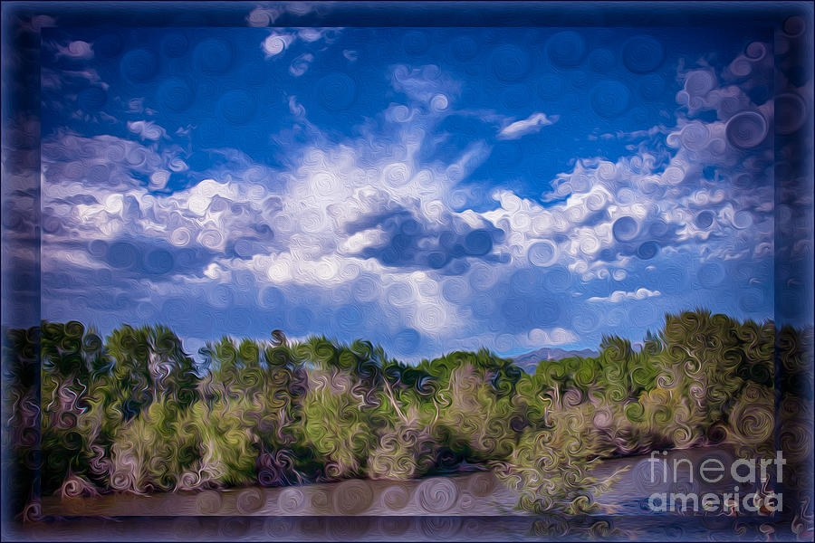
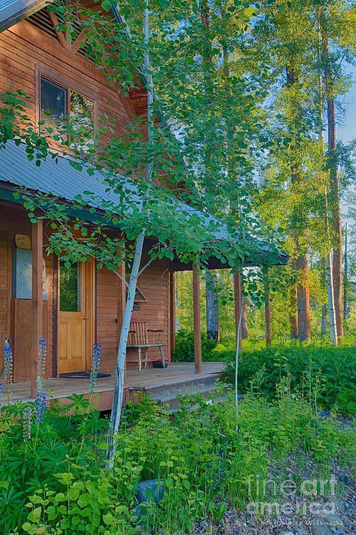
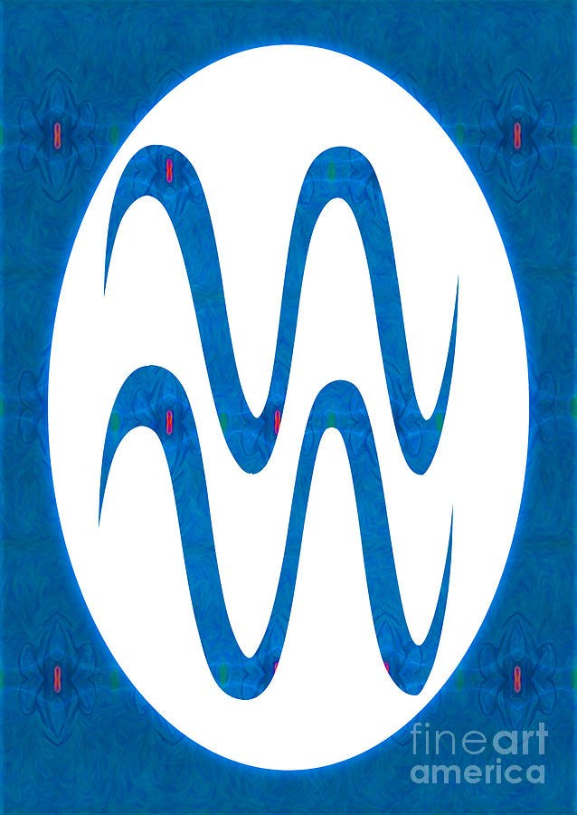
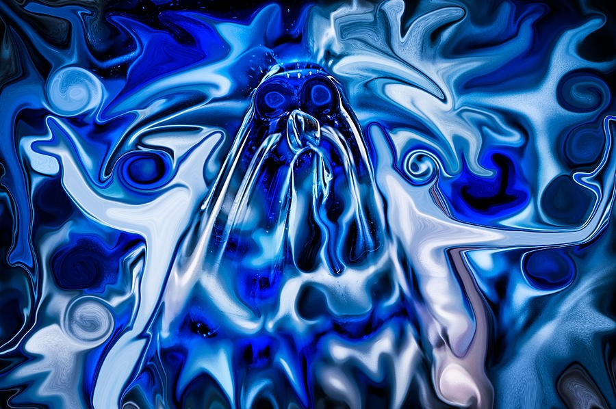
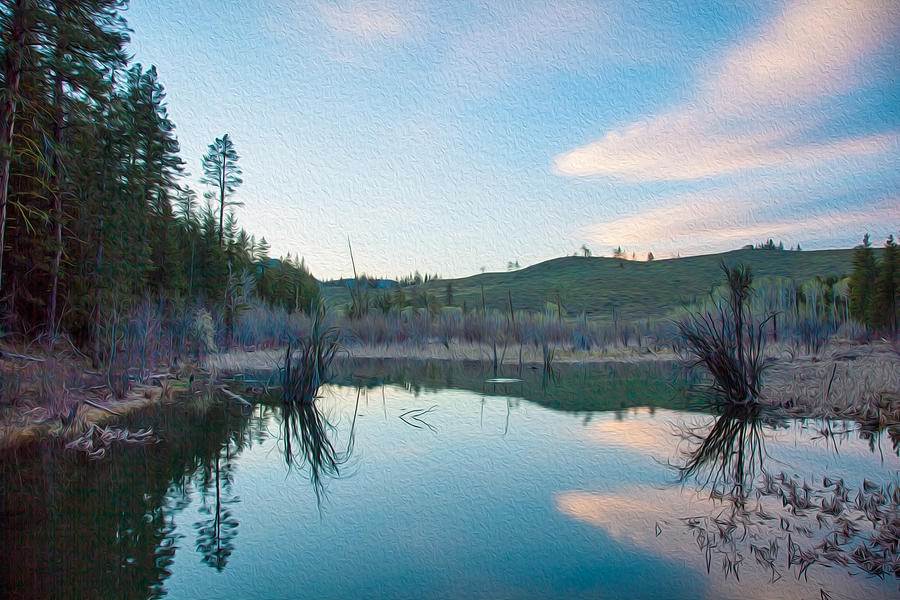
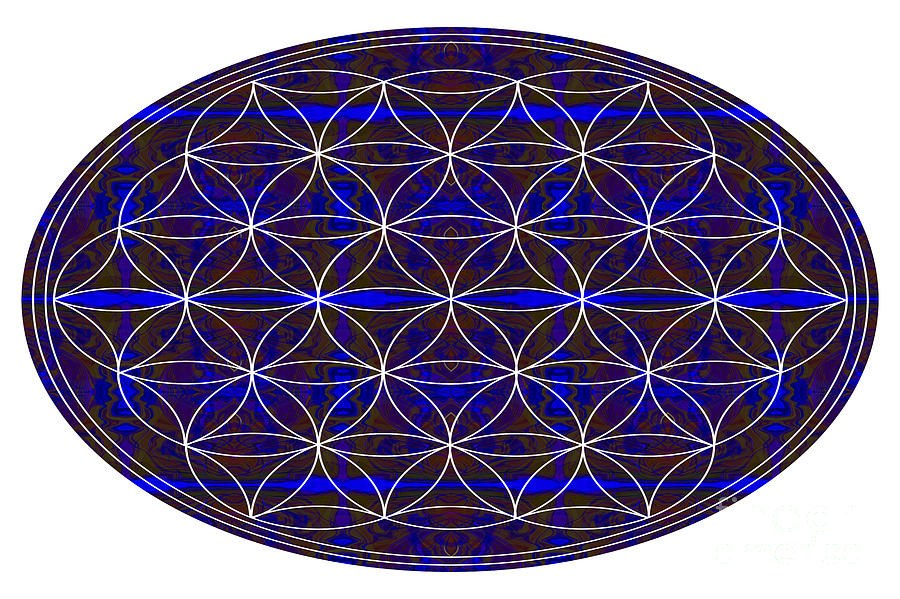

Rooms · 456 pieces
Bedroom Wall Art
The wall over the bed is the last thing you see at night and the first in the morning. These pieces suit a room you want to come back to.
Hanging tip. Over a queen bed, a piece 40 to 48 inches wide sits well. Hang it 8 to 12 inches above the headboard. Press “See it in this room” on any piece below to hang it in the room above, at real size.

Curling Sky Over the RiverbankThe sunlit blue sky with billowing white clouds and a calm waterway along the bottom is a gentle, recognisable subject, and the horizontal shape suits the wall above a bed.Shelter in the Pines, Log PavilionThe soft, even light, still mood and gentle green-and-brown palette make a quiet horizontal piece for over the bed or on the opposite wall, with an approachable shelter on a lawn as the subject. Lantern Oval, Mirrored Abstract in Gold, Blue and RedThe horizontal shape suits the wall above a bed, and the ordered, mirrored composition with a bright central oval gives a bedroom wall a clear focal point, though the saturated red border suits a bolder bedroom rather than a pale one. Ember Window: Sunset Sky Over EvergreensThe horizontal sunset sky with a small purple cloud at its centre suits the wall over a bed, where the warm glow and cooler blue above give a gentle, easy-to-look-at scene. 
The Waiting Chair, Cabin and LupinesThe soft, warm low-angled light and the gentle subject of a quiet cabin porch with one wooden chair give a restful scene to wake up to, in deep greens and warm wood with small touches of purple and blue.Still Daisies and Stirred StoneThe soft, even light, quiet colours and gentle wildflower subject make a calm-looking piece for the wall over or opposite the bed, with the swirling paint texture adding quiet interest. Cobalt Window in the CloudsThe bright white clouds around one deep blue opening give an open, airy, looking-up feeling, and the soft billowy forms and pale gray-blue shadows suit a wall you see on waking. 
Aquarius Double Wave in BlueBeside a bed, the tall, symmetrical shape suits a narrow stretch of wall, and the blue marbled background with its watery pattern keeps the colour scheme cool, with small red accents for contrast.Pale Grove, Aspens Along a Forest TrailThe soft, even daylight, blue sky through bare branches and natural palette of brown, white and green give a quiet forest view that works over or opposite a bed. Amber Lantern, Mirrored Glowing OvalThe tall, strictly symmetrical frame with one softly lit oval centered on it suits the wall behind a headboard as a single statement piece, with dark edges that keep the warm colour contained. Blue Hour Cove, Rocky CoastlineThe calm cove, soft dusk or dawn light and mostly cool blue and grey tones suit the wall over or opposite a bed in a blue or neutral room. Sunlit Ruffles, Yellow and Burgundy IrisThe vertical format fits the space above a dresser, and the warm sunlit yellow against soft olive green gives a single-flower subject that is gentle in subject yet rich in colour. The Small Visitor - Blanket Flower on Gray-BlueThe cool gray-blue background and soft diffused light keep the wall quiet, while a single warm flower gives a gentle subject to see on waking, whether opposite the bed or on a narrow wall beside it. Mirror and Whorl, Blue and Pink AbstractThe soft, luminous cream and blush pink keep the deep blue from feeling cold, so the wide horizontal piece can sit over or opposite the bed as a gentle, flowing image. Lone Bubble in Lavender Light, Abstract MacroThe soft glow that looks lit from behind and the cool purple, blue and teal tones suit a wall over or opposite the bed, with a small bubble and drifting specks that reward a second look. Red Heart, Blue Dome: Macro Glass AbstractThe pale, hazy cream field and soft, diffused light keep the saturated red, blue and green from feeling heavy, so the horizontal piece can sit over or opposite a bed in a neutral room. Ember Seam, Red-Orange Abstract in Yellow and PeachThe soft, glowing yellow and peach fields with smooth translucent shapes keep the colour warm and quiet, while the horizontal format sits comfortably over a bed and the red band adds a little energy without making the wall busy. Blue-Violet Street to the HillsThe cool blue and purple palette, even daylight and quiet, empty sky suit the wall over or opposite a bed, where a softer, dreamlike landscape fits. Amber Drift, Glowing Glass AbstractThe soft peach and cream gradients and the gently swirling, suspended forms suit a horizontal spot over or opposite the bed, with the blue arc keeping the warmth from feeling flat. Ember Bloom, Red Lily with Golden ThroatThe low-key light, velvety petals and dew droplets give a rich, moody look that suits a bedroom wall over a console or beside the bed, where a single deep red bloom can be the one warm accent. Cancer in Crimson: Zodiac Glyph in a White OvalThe vertical format suits a narrow wall beside the bed, and the recognisable Cancer symbol gives a Cancer or someone who loves one a personal piece, with the white oval as a calm centre inside the red. Ember Wings: Mirrored Red and Gold AbstractThe horizontal shape and centred symmetry sit well over a bed, and the dark navy border gives the glowing warm centre a contained frame for someone who wants bold colour there. Pink Plume Over a Turquoise RiverOver the bed, the long horizontal river view with its band of moving water and soft pink cloud fits a wide headboard wall, though the saturated blues and strong contrast make it a livelier choice than a muted one. Silver Sleeper - Driftwood in a Clear StreamThe soft diffused light, quiet earthy palette and gently rippling water make a restrained image for over or opposite the bed, with a bird-like driftwood shape to discover over time. Lavender Ruffles - Painterly Purple IrisThe soft, diffuse light, ruffled lavender petals and blurred green garden backdrop give a gentle, painterly flower that works as a quiet colour accent over or opposite the bed. Lit From Within, Purple Stained Glass AbstractThe horizontal, centred symmetry suits the wall above a bed, and the deep purple field gives a rich backdrop for people who want strong colour there, though the saturated palette is lively rather than quiet. Electric Lotus, Blue and White MandalaThe cool white-and-navy palette with a single centered blue triangle and still, symmetrical layout gives the wall over or opposite the bed one quiet focal point, without rainbow colour or busy ornament. Last Light Tower, Painterly Sunset CloudThe steel blue, dusty violet and soft peach-pink palette is cool and muted overall, so a horizontal piece over or opposite the bed stays quiet while the small warm cloud crown adds a touch of drama. Ember Current: Tall Blue and Orange AbstractThe tall format fits above a bed headboard or on a slim wall beside it, and the glowing orange and deep red give a bold, warm colour choice for someone who doesn't want a soft, neutral abstract there. Golden Dreams, Mirrored Ribbon PatternThe warm golden-yellow ground and the DREAMS headline with its message about growth and life changes suit the wall over or opposite a bed, though the saturated colours make it a bolder choice than a quiet piece. Ember Heart - Mirrored Red AbstractThe heart shape and warm amber glow give a romantic, decorative note over or opposite a bed, while the mirrored symmetry and generous cream surround keep the composition balanced and uncluttered. Marbled Wings, Moon Phase ButterflyPlaced over the bed, the balanced, still layout of the butterfly with its moon-phase arc and sun reads as a warm, bohemian centrepiece, and the cream background keeps it gentle on a light or warm wall. Ember Heart in a Leaf WreathThe heart inside a leaf wreath and the warm, ember-like glow make a symmetrical piece to hang centered above the bed or as one of a mirrored pair, though the intense colors are bold rather than quiet. Small Crown: Stone Cairn with Red Seed PodThe still, centered stack of stones in deep navy-black shadow gives a quiet, restful subject over or opposite a bed, with the single red pod as one small point of colour. Midnight Om Lotus MandalaThe calm bilateral symmetry and the navy-to-magenta-purple petals that look lit from within give a quiet, still focal piece to hang over or opposite the bed. Velvet Grain: A Field of Deep RedThe horizontal format suits the wall over a bed, and the soft, felt-like vertical grain gives the dark red a tactile, velvet-like look with no subject to interpret. Ember Window, Orange Gerbera DaisyThe horizontal shape suits the wall over a bed, and the warm light that makes the petals look lit from within suits someone who wants a bold, fiery floral there rather than a quiet one. Sixteen Petals, Blue Marbled MandalaThe cool teal and blue palette with a soft glowing white disc and gently flowing marbled fills suits a quiet focal point over or opposite the bed. 
The Watcher in Blue, Liquid Swirl AbstractThe horizontal format works over a bed, and the deep navy and cool blue palette gives the wall weight against white or pale walls, though the high-contrast swirling motion makes it a bolder choice than a quiet bedroom piece.Ember Above the Haze, Blanket FlowerThe muted gray-blue ground and soft diffused light keep the mood quiet, while a single red and yellow flower gives a bedside or over-bed wall one gentle point of warmth. Lit From Within, Mirrored Jewel-Tone AbstractPlaced beside or opposite the bed, the soft, glowing peach and blush center and the smooth, polished marbled curves give a warm, dreamlike focal point, while the deep blue and red corners add contrast against a lighter wall. 
Evening Mirror - Pond at DuskThe cool blue, teal and dark green palette with a single pale pink and peach note, and the very still mirrored water, give a quiet landscape that suits the wall over or opposite a bed.Ember Coneflowers and Lilac BloomsThe soft, diffuse late-day light, blurred garden and pale lilac blooms give a gentle floral for the wall over or opposite the bed, while the coral red adds a warm accent. Ember Lily, Glowing Orange-Yellow LilyA vertical piece over or beside the bed, the lily's warm backlit petals and smooth, painted-looking surface give a gentle, single-flower subject that is easy to wake up to. Cobalt Swan - Blue and Gold Glass AbstractThe horizontal format suits the wall over a bed, and the swan-like figure with shimmering, water-like ripples gives a second look after the blue, while the gold wing picks up wood or brass tones. Ethan's Anchor, Red Name ArtThe name "Ethan" in slim red letters on a clean white field makes a personal square piece for over a bed, a dresser or a bedside wall, and the white ground keeps it bright and uncluttered. Heart of Light, Rainbow Sunburst Heart on BlackThe horizontal, centred format and deep black ground suit the wall over a bed, and the saturated, bright heart suits someone who wants a bold, colourful piece there rather than a quiet one. Ember Totem, Mirrored Orange and Red AbstractThe perfectly mirrored, vertical composition suits the wall behind a bed, where the dark violet circle and the teardrop shapes above and below it form a centred, balanced anchor in warm colour. 
Cobalt Lattice - Flower of Life OvalThe horizontal oval format suits the wall above a bed, and its still, mirror-symmetrical geometry in deep blue and brown gives a rich, dark-toned focal point for someone who likes sacred-geometry patterns.Gilded Shallows, Clear Water Over PebblesThe slate blue-gray and muted teal-green water with soft white ripples gives a calm, fresh image, and the warm golden pebbles at the top keep the quieter palette from feeling cold over or opposite a bed. Midnight Wing, Marbled Butterfly SilhouetteA single centered butterfly on white with soft, glowing purple, blue and teal swirls suits the wall over or opposite a bed, where the uncluttered ground keeps it from feeling busy. Crimson Quartet - Mirrored Floral PatternThe horizontal format can sit over a bed, and the symmetrical layout and mirrored florals give a plain bedroom a strong, colourful focal point for anyone who likes bold colour rather than a quiet palette. Lantern Irises, Yellow Bearded IrisThe soft, diffused dusk-like light, muted lavender-gray and green surroundings and gentle, still mood make a quiet floral to have beside or opposite the bed. Green Lace Bloom - Mirrored Pink FlowerA horizontal, balanced and mirrored bloom suits the wall over or opposite the bed, with its glowing, diffused light and a flower as the subject giving a gentle focus. Cobalt Window: Symmetrical Blue AbstractThe deep navy and cobalt tones with a horizontal, centered composition suit the wall over a bed, with the soft glow at the center giving the eye a place to rest. Gold-Hearted Bloom, White Flower on Swirling GreenA single centred white flower with soft, even light on its petals and a gentle rotating swirl gives the wall over the bed a quiet focal point, while the dark green centre adds depth and the pale border keeps it light. Rooted in Red, Triangle Emblem on a White DiscThe large white disc leaves plenty of calm space around the red emblem, so it can hang as a single centered piece above a bed or in a quiet corner, though the deep red keeps it a bold accent rather than a soft one. Sunlit Filigree, Mirrored Golden AbstractThe horizontal, symmetrical layout suits the wall over a bed, and the soft lime-tinged glow through the centre and deeper amber edges give it a warm, sunlit feel without busy imagery. Ember Oval - Golden Mirrored AbstractPlaced behind or opposite the bed, the vertical oval with its smooth, slow-looping swirls and soft olive and peach border adds a warm accent that stays orderly because of the mirrored structure. Embers in Gray, Blanket FlowersThe soft, diffused light and calm blurred gray-brown backdrop keep the fiery blooms restful, so a horizontal piece over or opposite the bed gives warm colour without a busy pattern. Small Worlds in Violet, Macro of Glass SpheresThe deep violet-to-black palette with soft focus falloff at the edges gives the wall a dark, settled presence opposite or above the bed, with small lavender and silver-blue highlights for interest. Small Worlds in Blue GlassThe deep navy and indigo palette with soft highlights inside each orb works as a horizontal piece over or opposite the bed, with surface detail that rewards a second look. Amber Totem, Mirrored Orange AbstractThe strict mirror symmetry sits well centred over a bed or on a slim wall beside it, and the warm orange and gold are offset by cool teal and violet edges. Petal Wings, Mirrored Pink AbstractThe horizontal, centred composition sits naturally over a bed, and the soft cream light along the smooth, silky folds gives the vivid pink some softness. Becomes: Driftwood in Amber WaterThe soft, diffuse daylight and gentle diagonal flow of the log through dark water suit a horizontal piece over or opposite the bed, with a quote that rewards a second reading. Happy Birthday Jessica, Marbled Rainbow HeartThe bright, cheerful marbled heart and the personalised 'Happy Birthday Jessica' lettering make a small, personal piece for a bedroom wall or a gift for someone named Jessica, and the generous white space keeps it light. Beside the Weathered Trunk, Pink BlossomsThe soft, diffuse daylight and airy blurred background make a gentle floral subject for a wall over or opposite the bed, with the pink and magenta adding colour and the rough bark adding some weight. Heart of Scrolls: Symmetrical Heart in Red and MustardThe centered heart with its warm orange-red, mustard and olive palette on a quiet cream ground suits the wall over a bed, where the strict left-right symmetry gives a balanced focal point with an affectionate, friendly feel. Lacework Heart - Symmetrical Blue and Gold PatternThe soft peach ground, pale glow around the heart's edge and the general affection a heart suggests suit a wall over or opposite the bed, though the bright blue and yellow keep it lively rather than hushed. Ember Heart - Mirrored Red and Green AbstractThe single centered heart with its mirrored red swirls and wide cream margins suits the wall over a bed, where its symmetry gives a formal, composed focal point and the heart shape reads as love and affection. Ember Wings - Mirrored Red and Orange AbstractThe horizontal shape and central axis suit the wall above a bed, and the silky, liquid surface and deep blue-purple base give the bold red-orange burst a softer ground, though the colour is still strong. Dusk Wings, Mirrored Abstract in Amber and GrayThe soft, warm sunset light and calm, balanced outward sweep of the wing shapes suit the wall above a bed, where the wide format spans the headboard and the gray-blue centre keeps the warm colours grounded. Ember Jewel, Mirrored Orange and Blue AbstractThe vertical shape and balanced mirrored layout suit the wall above or beside a bed, and the warm orange palette would hold a neutral or blue-toned room, though the colour is saturated rather than quiet. Lantern Bloom, Glowing Red FlowerHung over a bed or a console beside it, the dark blurred background and the single backlit red bloom give a quiet room one strong, focused accent of colour. Ember Hollows, Mossy Tree TrunkThe green, brown and tan palette is quiet and sits easily with wood and linen, while the swirling bark and warm orange hollows add gentle interest across from the bed. Ember Fan: Trumpet Flowers in SwirlsThe horizontal shape suits the wall over a bed, and the dark blue ground with glowing blossoms makes a bold, colourful choice for someone who wants a vivid flower piece there rather than a quiet one. Held Breath, Blue Archer in White OvalThe vertical shape fits the narrow wall beside a bed or door, and the cool blue-and-white palette with a soft glow around the oval keeps a single clear image uncluttered. Crimson Totem in a Navy OvalThe perfectly symmetrical composition and flat, even white field suit the wall over a bed, where it can hang as a centered single piece or as a matched pair. Blue Wings on Gold, Mirrored AbstractThe horizontal layout suits the wall above a bed, and the balanced, mirrored composition with glowing blue panels gives the wall a steady, ordered focal point. Under the Big Mountain, Golden Meadow and CabinsThe soft, diffused overcast light and gentle movement of the grass make a calm-looking vertical piece for a slim wall beside the bed, and its gold and blue-grey palette sits easily with wood, neutrals or deep blue. Lantern Gold, Violet Cell AbstractThe soft, diffuse light, smooth liquid-looking surfaces and warm mauve and violet cells suit a wide wall over or opposite the bed, with a slow, dreamlike mood and no hard highlights. Daisy Wings, Mirrored White DaisyThe soft, even light and muted green ground keep the mood gentle over a bed, while the recognisable white daisy at the centre is an easy subject to see first thing. Whirling Blossoms, White Flowers in a Blue SkyThe horizontal shape fits over a bed, and the warm brown circle panel pulls the cool blue toward earth tones while the swirling white blossoms give a gentle turning motion to wake up to. Quiet Company, Two Ducks in a Teal OvalThe muted mauve and dusty pink ground and the gentle pair of ducks facing each other make a quiet, soft subject for over the bed, with the small yellow duck adding a single warm spark. Surfacing: Koi Among ReflectionsThe soft, flowing movement, brushed finish and gentle subject of koi drifting up through rippled water suit a wall over or opposite the bed, with the blue field keeping the colour cool overall. Gold Over Pink, Koi in Deep Blue WaterThe deep blue water and gently gliding fish give a horizontal piece for over or opposite the bed, with the pink and gold adding warmth without a harsh subject. Ember Drift, Three Koi on Dark WaterThe dark, quiet pond ground and gentle circling ripples around drifting koi make a wide horizontal piece that works over or opposite the bed, with warm color held in the fish rather than spread across the wall. Lantern in the Water, Yellow and Pink KoiThe soft, painterly water and the slow, drifting ripples around the koi make a gentle subject for the wall over or opposite a bed, and the horizontal shape sits well above a headboard. Slow Gold, Yellow Koi in Cobalt WaterThe slow, forward-and-downward glide, the open blue space on the left and the single small bubble make a quiet horizontal piece that suits the wall over or opposite a bed. Ember Under the Ripples - Orange KoiThe dominant blue and dark water with one orange fish gives a horizontal piece for over or opposite the bed that reads as a gentle, uncluttered subject. Spotlight Daisy, White Daisies in Warm LightA single white daisy with a golden center is a gentle subject, and the dark, softly blurred background keeps the mood quiet, which works well as one of a pair or on a single wall opposite the bed. Sleepy Green Reacher, Melted Figure on BlueThe closed-eyed, slumping green figure has a drowsy, tender look that suits a wall over or opposite the bed, though the saturated blue and bright accents make it a bolder choice than a quiet piece. Leo Aflame, Orange Zodiac GlyphPlaced beside the bed, the bright white oval keeps the piece light while the orange, red and amber swirls add a warm accent, and it suits someone with a Leo birthday. Jewel Portal, Symmetrical Abstract on MaroonIts centered, symmetrical composition and dark maroon ground suit a single statement above or opposite the bed, with the glowing oval acting as a jewel-like emblem for those who want rich color there. Golden Current, Rippling Water Over StonesThe cool navy and blue water with soft-edged ripples and a single gold band of light works over a bed, where the horizontal shape fits and the quotation about owning your story adds words to the wall. Unfurling Pink Kaleidoscope OvalThe horizontal oval suits the wall over or opposite a bed, where its pink and magenta glow and mirrored, gently unfolding curls give a symmetrical, ornamental focal point, though the saturated colour is a bold choice for someone who wants it. Indigo Portal: A Jewel-Toned Yin YangThe dark navy ground, soft creamy white half and smooth, hazy marbled swirls give a restrained, balanced look that suits a quiet wall beside or opposite the bed. Ember Damask - Terracotta AbstractIts soft, diffuse light and low-contrast terracotta tones bring warmth over a bed without a loud focal point, and the horizontal format fits a headboard wall. Electric Drift, Pale Creature in Blue WaterThe horizontal shape suits the wall above a bed, and the glowing white-cyan light at the top eases into deep navy at the bottom, though the electric saturation makes it a bold rather than quiet choice. Pink Looking Glass, Mirrored Magenta MedallionThe soft pale pink ground around the oval and the gentle, rhythmic curving forms suit a spot over or opposite the bed for someone who loves pink, while the dark maroon rim keeps it looking deliberate rather than sweet. Midnight Heart, Marbled Blue AbstractA heart that looks ornate and graphic instead of sweet suits a wall over or opposite the bed, with the dark centre panel and blue edge giving a strong dramatic backdrop; check that the bright border suits the room. Cobalt Perch, Bare Trees and Small BirdA single small bird, thin white clouds and a lacy web of silhouetted twigs make a quiet, gentle subject for the wall beside or opposite the bed, with the blue and navy palette keeping it cool in tone. Ember Window, Mirrored Blue and Orange AbstractCentred over a bed, the mirrored composition has a balanced, orderly structure, and the deep navy middle grounds the saturated orange and yellow swirls for anyone who wants a bold, colourful piece there. Folded Silk - Swirled Yellow FlowersThe soft cream-yellow petals that flow like folded silk, set against deep green, give a warm but not sugary picture that suits the wall over or opposite a bed. Mary, Pink Heart with ScrollworkThe soft pink-lavender heart with the name 'Mary' in red script feels personal and gentle, so it suits a bedroom wall, whether for someone named Mary or as a gift for her. Crimson Drift: Coral and Burgundy AbstractThe soft-edged, slowly drifting shapes and pale cream centre give a warm but gentle look over or opposite a bed, with teal and sage at the edges offering a cool counterpoint to the reds. Budding Bend, Painterly River LandscapeThe soft, even daylight, the muted olive and warm brown against pale blue-green water, and the quiet early-spring river scene give a gentle subject that suits the wall over or opposite a bed. Ember and Cobalt, Glowing Abstract CurvesThe smooth, soft-focus curves and the deep blue and purple fields read as quiet, while the warm glowing edges give the wall above or opposite the bed a gentle point of light. Almond Light, Mirrored Blue AbstractThe horizontal, mirror-symmetrical composition fits the wall over a bed, with a deep blue field and a single central focal point giving the wall an ordered, balanced look. Violet Crease, Lilac and Navy AbstractThe soft lilac and mauve forms with glowing edges and a calm, dreamlike feel suit a wall over or opposite the bed, where deep navy fields keep the colour rich without looking busy. Hush of Ruffles - Cream Flower with Pink EdgesThe pale cream bloom with pink-rimmed petals and soft, diffused light gives a gentle subject, and the dark green blur behind it keeps the colour quiet enough to sit over or opposite a bed. Ruffled Glow, Cream Peony on Dark GreenA single, quiet cream-white bloom with soft, even light and a pale mat-like border suits the wall over or opposite a bed, where the neutral palette sits easily with ivory and grey bedding. Cobalt Sentinel, Mirrored Blue AbstractThe horizontal, perfectly mirrored layout suits the wall above a bed, and the cool blue dominating the middle and top gives a single strong colour, with the warm edge streaks as a quieter accent. The Quiet Weight of Clouds, Snowy Mountain ValleyThe soft, diffused light, muted taupe and slate colours and the still, cold-weather mood make a restful landscape to hang over or opposite the bed, with the cream and peach clouds adding some warmth. The Long Bend: Driftwood Among River StonesThe soft, overcast-style light, low contrast and muted earthy palette make a quiet piece for the wall over or opposite the bed, with the rust and moss green kept to small touches. Quartet in Black, White and RedThe vertical, self-framed composition with soft wavy white lobes and smoky gray areas can sit beside or over a bed as one bold, balanced piece, though the deep black and red make it a dramatic choice rather than a quiet one. Stone Halo, Yellow and Red FlowerThe soft, diffused light, blurred stone and quiet, still composition keep the colours gentle, so the one warm yellow flower makes a restful piece to hang over or opposite the bed. Green Lotus Star, Sacred Geometry EmblemThe horizontal, balanced layout and open white ground suit the wall over a bed, where the soft marbled swirls inside the green petals add gentle movement to an otherwise static design. Velvet Pair: Purple and Yellow ViolasThe two violas set calmly left and right of center in a balanced square give a recognisable, gentle subject for beside the bed or a window, with the swirling oil-paint texture adding interest without busyness. Far Edge of the Meadow, Horses Under a Big SkyThe vertical shape fits a bedroom wall where a wide landscape would feel too horizontal, and the soft diffused daylight, gentle grass ripple and painterly texture make a calm-looking scene for beside a window or over a dresser. Yellow Ribbon Rows - Mirrored Marbled PatternThe soft sky blue and lavender ground with pale, even, shadowless light gives a bed wall a gentle colour base, and the mirrored yellow ribbons add one cheerful note without crowding the room. Gold on Still Water, Mountain Lake in AutumnThe still, mirror-like lake and calm, mostly motionless scene make a gentle subject for the wall over or opposite the bed, with the blue and green suiting a cool or warm-toned room. Ember Ruffles, Orange Iris PortraitThe close, intimate iris portrait with soft diffuse light and a dark, low-detail background gives the wall opposite or beside the bed a rich, quiet focal point without a busy scene. Pisces Glow - Green Zodiac SymbolPlaced beside the bed or a doorway, the vertical piece with its deep greens and softly swirling marbled texture works as a single centred emblem, and it makes a fitting personal or gift piece for a Pisces. Sunlit Ruffles, Peach IrisThe single bloom with an unopened bud beside it is a gentle subject, and the warm peach tones against the dark ground suit the wall over or opposite a bed. Lilac Glow, Pink Irises on Deep GreenThe soft, blended edges and gentle upward-tilting blooms in rose, peach and lilac give a floral that reads as painterly and warm rather than crisp, which fits a wall over or opposite the bed. Spiral Bloom, Pink and Peach Petals on DarkThe pink and peach bloom glows against a nearly black ground, so it works as a single vertical piece over or beside a bed, with warm, rich colour rather than a pastel or sugary look. Pink Whorl, Swirled Blossoms on BurgundyThe horizontal flower cluster has a soft glow and a gentle swirling texture, so it works over a bed for someone who wants real colour and a familiar floral subject. First Blush, Lavender Rose BudThe half-open rose bud is a gentle subject, and its soft pink and lavender glow against deep green keeps the mood quiet and a little moody, which suits the wall over or opposite a bed. Lace and Stone, Pink Yarrow FlowersSoft, even, dusky light and gentle upward-swaying stems give a quiet floral to hang over or opposite the bed, with pink that stays muted rather than candy-bright. Lit From Within, Magenta Fringed FlowersThe soft, out-of-focus green background and the gentle, mostly still painterly surface give a bed wall a floral piece with strong magenta colour that stays easy to look at. Lantern Wings, Purple and Blue ButterflyThe horizontal butterfly suits the wall above a bed, and the pale lavender-white field with soft pink and violet gradients keeps the bold navy outlines from feeling heavy. Carved in Light - White PlumeriaSoft, rounded creamy-white petals with a warm golden glow and a gentle spiral movement make a lush, gentle-subject piece to hang over or opposite the bed. Ember Mask, Symmetrical Abstract in Yellow and RedThe horizontal shape and central axis suit the wall above a headboard, though the hot, high-saturation palette is best for someone who wants a bold, warm statement over the bed rather than a quiet one. Pink Filigree - Mirrored Abstract on BlackThe horizontal shape and settled mirror symmetry sit comfortably over a bed, and the pink, lilac and burgundy palette on black suits someone who wants a bold, decorative colour accent there. Lit From Within: Magenta PeonyA single centred peony with soft, even light is a gentle subject for the wall over or opposite the bed, with the deep green surround keeping the saturated pink from feeling busy. Blush Rising, Sunlit Pink TulipA single sunlit pink tulip with cream-edged petals is a gentle subject, and the dark background and faint aged-paper texture make it a quiet piece for beside or opposite the bed. Heartfold, Crimson Mirrored AbstractThe heart-like crescent shapes give a romantic, affectionate feel and the symmetry keeps it orderly, so the rich colour works as a calm focal point over or opposite the bed. Pink Drift, Glossy Abstract MacroThe soft, luminous light, creamy open ground and gently drifting rounded forms give a horizontal piece for over the bed that is rich in colour but not loud. Mirror Bloom: Magenta Stained-Glass AbstractIts horizontal shape suits the wall over a bed, and the centered, mirrored symmetry reads as orderly and settled while the glowing magenta and pink stained-glass shapes give the room a strong colour accent. Indigo Moon: Navy Star Mandala on WhiteThe deep indigo border and moon-like violet glow suit a dark or deep-toned room, and the square, centred shape sits well above a bed on its own or as one of a pair. Cobalt Grain - Blue Textured AbstractThe horizontal format and uniform deep blue with very quiet movement and diffuse light give a restrained block of colour that fits over or opposite a bed. Leaning Together, Purple Lilac ClustersThe horizontal format suits the wall over a bed, and the gentle downward drape of the blooms with the soft, glowing blurred background gives a gentle floral subject to wake up to. Violet Hem, White Iris Seen from AboveThe recorded palette of white, lavender and violet with a soft, painterly texture suits a wall over or opposite the bed, with a single flower as the quiet subject. Baby in Liquid Color, Hand-Lettered Word ArtThe word 'Baby' in bright blue, green, yellow and orange swirls on a clean white ground gives a small-to-medium wall, such as above a dresser or changing table, one clear focal point without relying on pastels. Lit From Within: Amber and Purple Macro AbstractThe horizontal shape fits the wall above a bed, and the soft mauve field and blurred areas next to the glowing amber edges give the saturated colour some softness for someone who wants warmth there. Amber Lantern, Glowing Abstract MacroThe horizontal format suits the wall above a bed, and the soft backlit glow and pale cream and grey-blue background keep the bright colours gentle on the eye. Plum Glow, Mirrored Loop AbstractThe horizontal format and vertical centre axis suit the wall over a bed, and the balanced, rhythmic loops give a warm, ornamental focal point, though the saturated colour makes it a bolder choice than a quiet bedroom piece. Crimson Dome, Red Flower ClusterThe horizontal format suits the wall over a bed, and the recognisable flower subject with soft green surroundings gives a rich, painterly colour accent for a neutral, cream or wood-toned room. Ember Seahorse, Red Kaleidoscope SilhouetteThe square, single-figure composition with generous white negative space suits a modest wall over or opposite the bed, adding a rich red focal point with a fine pattern to look at up close. Amber Rim - Brown Oval in Blue and CreamSoft-edged, translucent shapes and a cream ground that fades to near-white keep the colour gentle over or opposite a bed, with the amber-rimmed brown form giving a warm anchor. Stones Afloat on a Forest CreekThe soft, overcast-like light, still water and subdued green and rust tones make a quiet, low-contrast image that suits the wall over or opposite a bed. Gold Stone in Blue CurrentThe horizontal shape fits over a bed, and the cool navy ripples with one warm gold glow are a good match for a blue or neutral bedroom. Ember Window, Fiery Spiral AbstractThe horizontal shape suits the wall above a bed, and the black band and warm amber glow make a bold, dark-toned statement for a buyer who wants strong colour there. Indigo Om, Marbled Lotus MandalaThe orderly, balanced radiating pattern and soft lavender, peach and purple swirls on a clean white ground suit the wall over a bed as a quiet, gentle focal point. Where Two Trunks Meet, Weathered Bark Close-UpThe soft, even light, muted gray-brown palette and slow, flowing swirls of the bark make a quiet vertical piece for a wall beside or opposite the bed, with a small opening of green at the top for freshness. Angel in the Marble - Mirrored Amber WingsThe warm amber, copper and deep brown palette and the quiet, reverent mood of the angel quotation suit a spot over or opposite the bed, with the dark border keeping it settled rather than loud. Midnight Jewel, Mirrored Magenta AbstractThe horizontal format suits the wall over a bed, and the symmetrical, slowly pulsing mirrored curves with soft lavender and pale pink ovals add a calm order to the vivid magenta and black. Ruffled Light, Soft Focus Flower PetalsThe soft-focus, glowing petals and dreamy blur of pink, orange and blue make a gentle subject for over or opposite the bed, with a horizontal shape that sits well above a headboard. White Drift, Flowers in Soft FocusThe quiet, shaded greens and soft diffused light give a gentle flower subject that works over or opposite a bed, with white blooms that glow softly rather than demanding attention. Unfolding, Pale Pink Iris on GreenThe soft pale pink iris with its ruffled, translucent petals and calm deep green surround is a gentle, romantic subject, and its horizontal shape suits the wall above a bed. Blue Marble Lotus, Black Line MandalaThe still, balanced layout and deep blue and white palette sit comfortably over or opposite a bed, and the marbled swirls give a quiet surface to look into up close. Ember Hour: Orange Sky Over a River BendThe recorded mood is calm, warm and quiet, like a still evening by the water, and the soft haze over the hills and the river reflecting the light suit a wall over or opposite the bed. Lit From Within, Green Glass MacroSoft pastel fields of pink, purple and blue with a gently glowing, backlit green form give a horizontal piece for over or opposite the bed that stays gentle in tone, while the fine amber tendrils add something to look at. Lift, Soaring Bird Against Deep Blue SkyThe smooth, still field of blue and the quiet gliding bird give a bedroom wall open air and a simple subject, with just a touch of pink-red at the head for the eye to land on. Blush Light, Pink and Peach AbstractSoft, backlit pink, cream and peach pools with gentle, flowing curves give a warm, quiet abstract for over the bed, with no literal subject to compete with the room. Rose Aglow, Ruffled Magenta RoseA single ruffled rose rendered softly with a painterly, grainy finish reads as romantic without turning sugary, and the vertical shape fits the wall beside or above a bed. Ember Drop - Glossy Maroon AbstractThe calm cream centre and warm plum-to-peach bands keep the colour rich but settled, so a horizontal piece over or opposite the bed feels soft and quietly dramatic rather than busy. Ember Lace Heart, Mirrored Marbled HeartThe heart motif and warm, balanced palette set against an open white background suit the wall over or opposite a bed, and the calm left-right symmetry keeps the look affectionate and easy. Quiet Ember - Orange ConeflowerThe calm, drooping bloom and the dim, low-key purple bokeh give a quiet, restful flower picture for over or opposite the bed, without a bright sunny-garden mood. The Blush Unfolding, Pale Pink PeonyThe blush pink and cream petals around a softly lit center give a gentle single-flower subject that suits the wall over or opposite a bed, and the dark green surround adds depth without busyness. Tulips on the Boulder WallThe still, calm scene of dappled light, soft shade on the lawn and muted green-gray-brown tones is a quiet subject to hang over or opposite a bed. Tulips Beneath a Crooked TreeThe sunlit garden bed with a lawn path receding behind it is a gentle, recognisable subject, and its horizontal shape sits comfortably above a bed. Gold Current, Rippled Water Over StonesThe soft, diffused light and gently curving ripples in cool blue-grey make a quiet horizontal piece for over or opposite the bed, with a little warm amber to keep it from feeling cold. Heraldic Glow - Mirrored Blue and Green AbstractThe pale white and lavender ground with a soft pink glow at the center gives a bright, centred piece for the wall over the bed, though the saturated blue, green and yellow forms keep it lively rather than hushed. Bronze Curl, Lavender and Rust AbstractThe soft-focus lavender and cream shapes, smooth glassy surfaces and gentle downward flow give a quiet, low-key piece for over or opposite the bed, with one small bronze curl at the center for the eye to settle on. Be Badass Everyday, Pink Braided Border QuoteThe portrait shape suits the wall beside a dressing area or mirror, and the warm pink, plum and lavender loops around a pale center give a room that can carry the colour a bold accent. Worked For It - Purple IrisThe soft even light, hazy green background and lavender-purple iris give a quiet, gentle subject that works over or opposite a bed, where the wide horizontal shape sits comfortably above the headboard. Violet Ember, Abstract Macro in Purple and AmberThe soft out-of-focus edges and smooth, fluid shapes make a horizontal piece for over or opposite the bed, with the deep violet and warm glow supplying the colour and the pale cool space at the top and right giving it room to breathe. Ember Mask, Mirrored Orange FlowerThe dark green ground and soft, feathery petal edges give the bright flower a glowing look over or opposite the bed, and the strong symmetry keeps the wall orderly. Sunshine Rose, Painterly Yellow Rose and BudThe gentle, calm movement of the spiraling petals, the soft glow of yellow against muted green and the quiet pale bud suit a bedside or over-the-bed wall where a soft floral is welcome. Ember Lotus: Golden Orange MandalaThe single centred emblem in warm gold-orange on a clean white field has a calm, balanced symmetry that suits the wall above or opposite a bed. Molten Gold, Lavender SwanThe calm, curved swan in pearly lavender and white sits at the quiet centre of the swirling gold and blue, and its horizontal shape suits the wall above a bed. Slow Love, Two White Swans on Blue WaterThe two white swans on calm blue water and the large word LOVE give a romantic, gentle subject for beside or opposite the bed, with the warm brown lower half grounding the wall. Swan Heart, Marbled Swans on Deep BlueThe swans' arched necks form a heart-shaped space, a gentle and recognisable subject that sits centred over a bed, and the horizontal symmetry matches the width of the headboard. Golden Axis, Symmetrical Blue and Green AbstractPlaced above a headboard, the centred golden glow and balanced left-right symmetry give the bed wall a formal focal point, and the deep blue and green ground keeps the saturated colour grounded. Wing Window: Pink Stained Glass ButterflyThe calm, still butterfly in soft pink and violet with glowing stained-glass-style wing cells gives a gentle subject for a wall beside or opposite the bed, including a girl's room where a pink-and-purple accent is wanted. Cobalt Hush, Textured Blue Color FieldA single deep blue with an even surface and only a faint vertical flicker gives the wall over or opposite the bed one quiet hue instead of a busy scene. Indigo Wings, Third Eye SymbolIts calm symmetry, flat even light and deep indigo-and-white palette read as quiet over or opposite a bed, and the soft marbled swirl in the side petals adds gentle softness to the bold emblem. Ember Daisies - Marbled Orange FlowersThe gentle, familiar flower subject and soft even light on a pale ground keep the strong orange approachable, so it works over or opposite a bed where a horizontal piece fits. Blushing Stars - Pink and Orange LiliesA floral subject with petals shading from deep pink to warm apricot gives a bedroom dresser or bedside wall a glowing, painterly focal point, and the dark green background keeps the colour grounded. Glowing Diamond Mask, Mirrored AbstractHung above or beside the bed, the vertical composition and balanced symmetry give warm, saturated colour a composed, ordered look for someone who wants bold colour there. Thaw on the Slope, Evergreen MountainsideThe soft overcast light and quiet palette of green, brown and white make a restful landscape to hang over or opposite the bed, with no bright sky or glowing sunset to compete with a settled room. Emerald Whisper, Green Damask AbstractThe soft, even light and quiet vertical streaking in rich green give a restful colour field for over or opposite the bed, with the barely visible mirrored scrolls adding detail on a longer look. Turquoise Totem, Mirrored AbstractThe horizontal, mirrored layout centres neatly over a bed, and the soft glow of the aqua shapes and cream highlights sits against deeper brown and navy rather than harsh contrast. Lotus Star, Green Mandala on WhiteThe strictly centered, symmetrical emblem in two main colours, green and white, with only small amber and gold glimmers, suits the wall over or opposite a bed where a quiet, balanced image is wanted. Rainbow Ladder, Seven Framed SymbolsOn the slim wall beside a bed, the steady vertical rhythm and bright white grounds give a calm, centered column of color with one symbol to look at at a time. Wine-Red Understory, Pale Green LeavesThe soft, diffused light and gentle drifting arcs of thin red branches give a quiet, low-key leaf image that suits a wall over or opposite the bed in a green, grey or earth-toned room. Ember Profile, Red Swirling AbstractIts horizontal shape fits over a bed, and the dark brown border with a warm glowing centre suits a bedroom built around deep neutrals, though the strong red makes it a bolder choice than a quiet piece. Stripes of Gold, Riverside MeadowThe gentle diagonal rhythm, the green-and-blue palette and the soft sway of the foreground grasses suit a wall over or opposite the bed, with the warm gold light working well beside warm textiles. Virgo in Gold, Zodiac Symbol in a White OvalThe clean white oval with a soft yellow glow and mostly still, symmetrical composition gives a bright, gentle focal point, and it works as a sign-themed piece for a Virgo's room. Blue Vishuddha, Throat Chakra SymbolThe two-colour blue and white palette, even bright light and calm centred symmetry make a restrained horizontal piece that suits the wall above or opposite a bed. The Open Window, Pale Pink IrisThe pale pink bloom, soft even light and muted green ground make a gentle, quiet floral that suits a wall over or opposite the bed. Embers by the Stream, Orange WildflowersThe soft, painterly finish and diffused daylight give a gentle subject, and the cool gray-violet water keeps the colour restrained enough for over or opposite the bed. Into the Tall Trees, Child on a Forest PathThe bright but soft daylight, the green and blue palette, and the gentle subject of a child walking a forest path give a quiet scene, with the child's red shorts as the one warm note. Gold Beneath the Ripple, Abstract Blue WaterThe cool deep blue and teal water with soft, brushed ripples gives a gentle, flowing look that suits the wall over or opposite a bed, with the warm gold glow as a quiet focal point. Molten Current, Golden Ripples Over Blue StonesPlaced over the bed, the horizontal composition and calm navy area with smooth rounded stones give a quieter side to balance the glints of gold, and it suits a room already using blue, grey or cream. Lantern in Turquoise - Glowing Bell AbstractThe smooth, glassy turquoise and blue layers with soft horizontal smearing in the background make a gentle, balanced piece to hang over or opposite the bed, with the warm amber glow at the base adding a quiet accent. Red Ribbons in a Blue Current, Tall AbstractThe dominant blue, teal and navy give a cool, restrained base, and the narrow vertical format fits a slim wall beside the bed or a window, with the red and magenta adding one warm accent. Heart Wheel - Blue and Yellow Heart MandalaThe small outlined hearts and playful, whimsical line work give a warm, light-hearted image to face from the bed, though the bold blue and orange suit someone who wants colour in this room rather than a quiet palette. Small Sun, Yellow Flower on a Dark GroundThe dark, softly brush-textured ground and a single calm, evenly radiating flower with a few water beads make a gentle, uncluttered subject to hang over or opposite a bed. The Bright Eye - White Narcissus with Red-Rimmed CupA single white flower with a gentle, drifting blurred background and a soft oil-paint texture is a quiet, easy subject to see over or opposite a bed, while the dark ground gives it more depth than a pale, airy print. Spiral Lily, White Flower on GreenA single white flower on a soft, evenly lit green ground with a cream-and-pink border is a gentle subject that suits the wall over or opposite a bed. Starburst Lilies on Dark GreenThe white lilies with their pointed, star-like petals are a gentle, familiar subject, and the horizontal shape suits the wall above a bed. Scrolled Peony, White Bloom on Dark GreenA single full peony with soft, glowing light and gentle swirling petal marks is a quiet, easy subject to wake up to, and its dark ground gives a bedroom wall weight rather than a pale accent. Quiet Glow, Cream Wild RosesThe quiet cream roses with soft diffused light and gentle diagonal drift make a calm, unfussy subject over or opposite a bed, with no pink or bright colour to dominate the room. Roses in a Violet Swirl, Pale Yellow FloralThe soft, diffuse light, gentle single-petaled roses and cool painterly background of violet, blue and pink give a bedroom wall a quiet floral that is not sugary or traditional. Daylight Roses, White Wild Roses on Deep GreenThe soft white and cream petals against quiet dark green give a gentle, low-contrast floral that sits easily over or opposite a bed, and the calm, unhurried swirl of the brushwork keeps the wall restful. Turquoise Heart, Blue Glass Tile MacroThe horizontal shape suits the wall above a bed, and the deep blue shifting from turquoise to cobalt adds one strong cool colour to a room with neutral walls. Between the Pines, Wildflower HillsideThe soft overcast light, muted colours and quiet hillside scene with a pale stream give a gentle subject to face from the bed, with the yellow wildflowers as the only bright note. Diamond Wings, Mirrored Blue AbstractThe horizontal shape suits the wall above a bed, and the smooth, glassy swirls and wing-like symmetry give a bright, balanced image for a room with otherwise plain walls. Lacework Canopy, Pine Forest TrailAs a single upright piece over or opposite the bed, the soft daylight, olive and yellow-green tones and gently swirling brushed texture give a quiet, wooded subject to wake up to. Spring Sky Over the Pebbled RiverThe slow river, soft white clouds and fresh spring green give a gentle, unbusy subject to hang over or opposite the bed, with the blue and white palette kept light. Stone and Current, Riverbank with Pine NeedlesThe brown, gray and tan palette with soft warm light on the water is quiet and earthy, so it fits a slim stretch of wall beside the bed where the rust and olive accents pick up wood and linen. Quiet Lift: White Blossoms on Deep GreenThe quiet, still mood and soft even light of the white flowers against deep blurred green suit a wall over or opposite the bed that wants a gentle subject with some weight. Butter Light, Pale Yellow RoseThe pale yellow rose glowing softly against deep green and violet is a gentle subject in quiet, dark-grounded colour, which suits a wall over or opposite the bed. Buttercream Glow, Yellow RosesThe pale yellow and cream roses, soft diffused light and gentle swirling strokes give a quiet, calm-looking piece for over the bed in a horizontal format. Golden Pair, Yellow Roses in Soft FocusThe dusky, soft-focus look and the gently melting petal edges keep the yellow roses quiet rather than cheerful, so the piece works as a gentle floral over or beside a bed. Bullseye Bloom, Yellow Flower on Pale StoneThe soft, diffuse light, still composition and muted beige, cream and brown palette make a gentle horizontal piece for over or opposite the bed, with one warm spot of yellow. Indigo Veil Yin YangThe soft, luminous palette of cream, sand and amber with a deep indigo-to-red-violet half, plus the symmetrical, balanced composition, gives a bedroom wall a quiet, restful focal point. Sunlit Triangle - Golden Petal MandalaThe calm, strictly symmetrical emblem glows in pale yellow and gold on a bright white field, so it can sit as a single quiet focal point above or opposite the bed. Other rooms: Living Room · Kitchen · Home Office · Entry & Hallway · Dining Room · Bathroom
Ask the gallery what fits your wall · Try art in a photo of your own room · Furnishing several rooms? The Discount Club